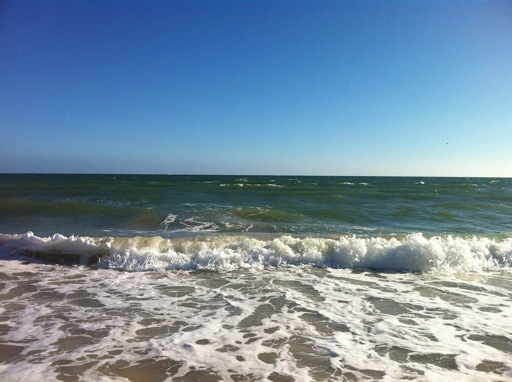
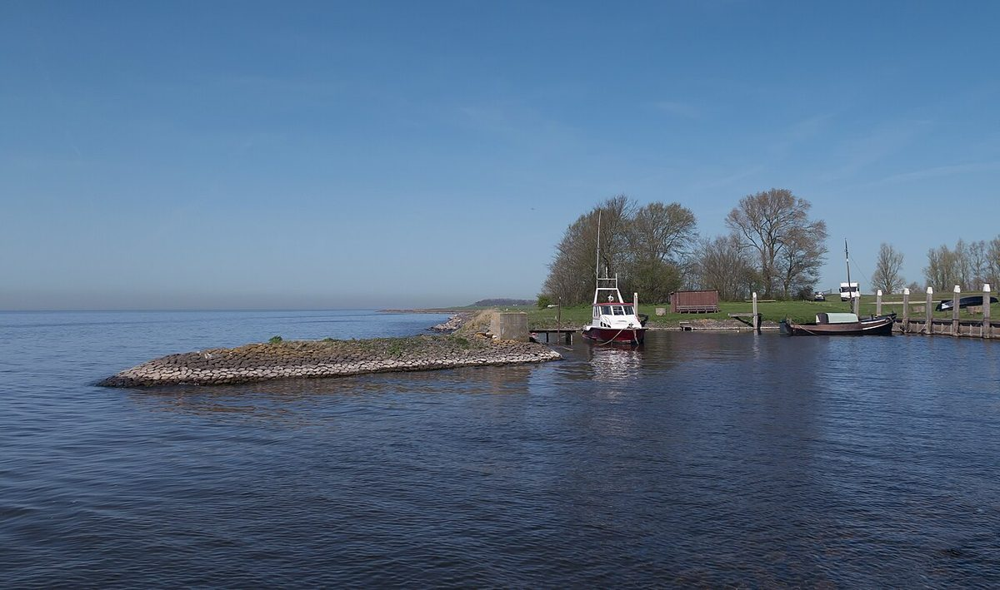

ラ·ピーヌ

制作側の連想
松葉は、二本でひと組。
屋号はフランス語で「松」の意とされますが、由来は分かりません。制作側は、松の葉(クロマツやアカマツの針葉)が二本ひと組で生えることから、「二つで一つ」という見せ方を連想しました。牛深は海の町なので、パンの写真と海の写真を二枚ずつ並べています。これは制作側の連想で、お店の理念・由来とは無関係です。
二葉のならび(イメージ)
パンと海を、二枚ひと組で。
写真は天草・牛深や実際のお店のものではなく、国外または撮影地不明のフリー素材です。お店の商品を示すものでもありません。





ご案内
確認できていること
| 所在地 | 〒863-1901 熊本県天草市牛深町196-11 |
|---|---|
| 電話 | なし |
| 営業時間 | 準備中 |
| 定休日 | 準備中 |
| ご予約 | 準備中 |
| 駐車場 | 準備中 |
| SNS | Instagram @boulangerie_lapine |